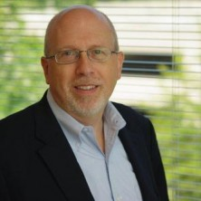

<div id="speakers">
<div class="cell">
<p><b>Steve Goodrich</b> is the president and CEO of The Center for Organizational Excellence, Inc., and the vice chairman of the Government Transformation Initiative. He has over 30 years of leading organizations and consulting top government and private sector leaders in organizational effectiveness strategies to improve performance. His passion for excellence has led him to create an organization that serves the American people and cares about its clients, employees, and partners. He participates in an advisory role as the major voice for COE and the consulting agency and regularly counsels CEOs, executives, and political appointees on organizational effectiveness and strategy.</p>
</div>
</div>